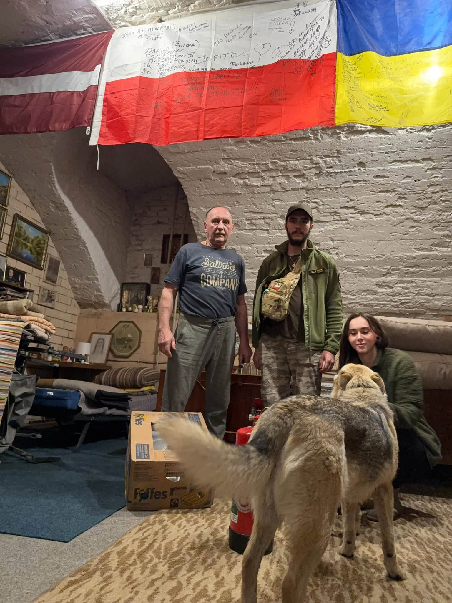
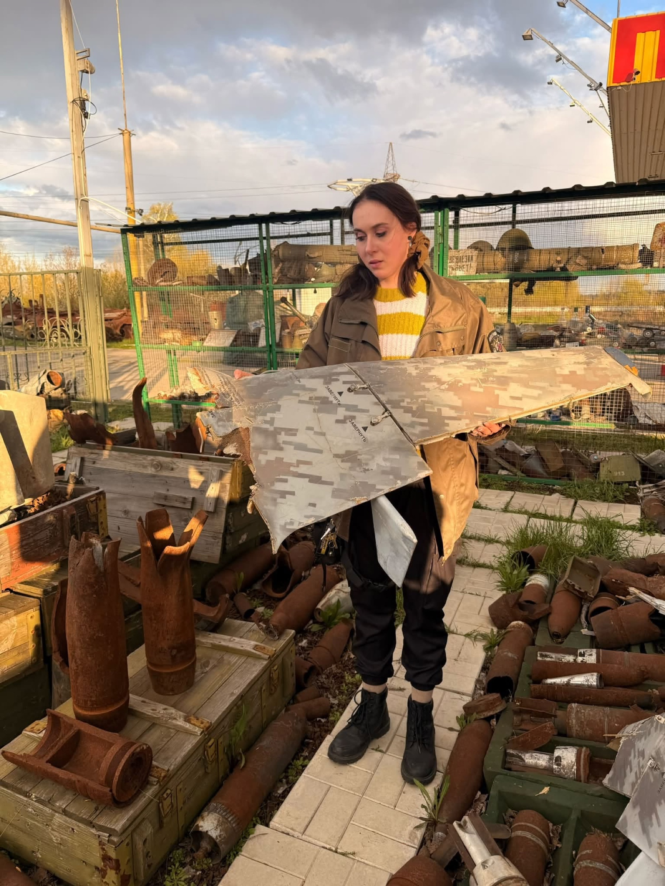
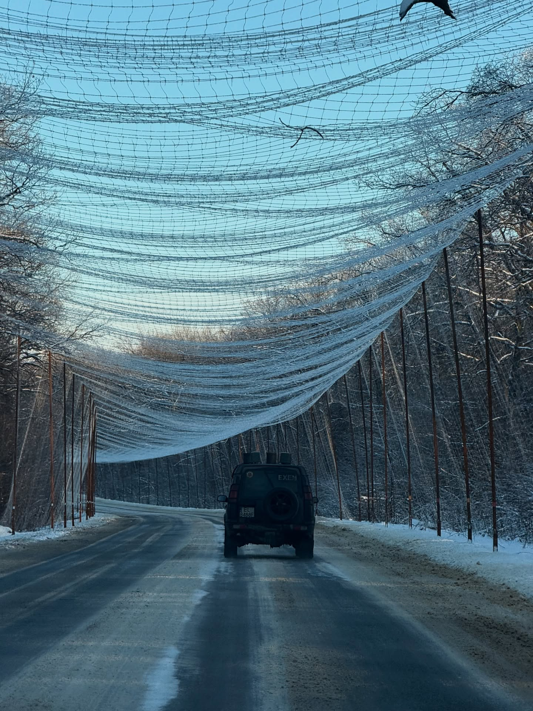

Słowa z drogi
i pomocy.
Proste objaśnienia pojęć z działań humanitarnych i relacji z Ukrainy. Potoczne terminy mogą mieć różne znaczenie zależnie od kontekstu.
To piwnica, w której podczas okupacji żyło prawie 100 osób. Jedna osoba tam zmarła. W tym samym miejscu urodziło się dziecko.
Nocowaliśmy tam nie raz. Spaliśmy w piwnicy z przestraszonymi babciami, a nad ranem budziły nas eksplozje KAB-ów.
To nie fikcja ani scena z filmu. Tak wyglądało życie ludzi tuż obok — gdy my mogliśmy siedzieć w bezpiecznych domach i pić herbatę. Za tymi słowami stoją prawdziwe ludzkie historie.

- Alarm / sygnał alarmowy
- Ostrzeżenie przekazywane na przykład syreną, przez telefon, radio lub oficjalny kanał. Po jego usłyszeniu sprawdź lokalne komunikaty i postępuj zgodnie z instrukcjami służb.
- Alarm powietrzny
- Oficjalne ostrzeżenie o możliwym zagrożeniu z powietrza. W zależności od lokalnych zasad może oznaczać konieczność udania się do schronienia lub pozostania w bezpiecznym miejscu.
- Bezpieczeństwo
- Nie jest jednorazowym działaniem ani gwarancją, że nic złego się nie wydarzy. To proces: rozpoznawanie zagrożeń, przygotowywanie prostych planów, korzystanie ze sprawdzonych informacji i dostosowywanie decyzji do sytuacji. Obejmuje zarówno ochronę przed bezpośrednim atakiem, jak i przygotowanie na przerwy w dostawie prądu, ogrzewania, wody czy łączności.
- Bezpieczeństwo cywilne
- Działania pomagające chronić życie i zdrowie osób nieuczestniczących w walce. To między innymi znajomość lokalnych alarmów, plan kontaktu z bliskimi i wiedza, gdzie szukać aktualnych komunikatów. Nie wymaga specjalistycznych umiejętności ani sprzętu survivalowego.
- Czujka
- W naszym zespole potoczna nazwa odbiornika, który wykrywa niektóre sygnały radiowe związane z dronami i może ostrzegać o zagrożeniu. Nie wykrywa każdego drona i nie zastępuje schronienia ani zasad bezpieczeństwa. Po ostrzeżeniu należy postępować zgodnie z ustalonym planem i lokalnymi komunikatami.

Czujka zamontowana w samochodzie zespołu.
- Darowizna celowa
- Wpłata przeznaczona na wskazany cel. Przed wpłatą warto sprawdzić opis zbiórki i zasady wykorzystania środków.
- Dron
- Potoczne określenie bezzałogowego statku powietrznego. Drony różnią się wielkością, konstrukcją i przeznaczeniem: mogą służyć do obserwacji, fotografowania, transportu lub działań zbrojnych. Samo słowo nie wskazuje, do czego służy konkretne urządzenie.

Na zdjęciu wolontariuszka trzyma skrzydło jednego z dronów. Bezzałogowce mają różne konstrukcje i mogą wyglądać inaczej. - Dron na światłowodzie
- Dron sterowany przez cienki przewód światłowodowy rozwijany w czasie lotu, zamiast zwykłego łącza radiowego. Dzięki temu zakłócanie sygnału radiowego może być nieskuteczne, ale nie oznacza to odporności na wszystkie zagrożenia.
- Ewakuacja
- Zorganizowane opuszczenie miejsca, w którym występuje zagrożenie, i przemieszczenie się do bezpieczniejszej lokalizacji. Może być czasowa albo stała. Wskazówki dotyczące ewakuacji powinny pochodzić od lokalnych służb.
- Fala uderzeniowa (fala wybuchowa)
- Gwałtowna zmiana ciśnienia, która rozchodzi się od miejsca wybuchu. Można ją odczuć jako nagłe, silne uderzenie, które przechodzi przez ciało. To bardzo nieprzyjemne doznanie; fala może uszkodzić m.in. płuca, słuch i narządy wewnętrzne, a w ciężkich przypadkach doprowadzić do śmierci. Skutki zależą m.in. od siły wybuchu, odległości i osłon.
- FPV
- Skrót od angielskiego „first-person view”, czyli widok z pierwszej osoby. Operator steruje niewielkim, zwrotnym dronem, obserwując obraz z kamery na urządzeniu. W warunkach wojennych drony FPV bywają używane do atakowania celów, w tym pojazdów. To określenie sposobu obserwacji i sterowania, a nie jednego modelu.
- Human safari („ludzkie safari”)
- Określenie opisujące polowanie na ludzi (cywilów) z użyciem dronów i codzienny lęk przed atakiem. To określenie z relacji cywilów, nie termin prawny. Relacja ONZ z Chersonia ↗
- KAB
- Skrót od rosyjskiego „корректируемая авиационная бомба”, czyli korygowanej bomby lotniczej. W relacjach z wojny w Ukrainie określenie to bywa używane także wobec bomb zrzucanych z samolotów i korygowanych w locie. Zdarza się, że docieramy i nocujemy w miastach, na które w ciągu jednej nocy spada około 40 takich bomb.
Ładunek zależy od wariantu — w niektórych bombach może wynosić około 250 kg. Niedawno spadła również bomba klasy FAB-3000 z modułem kierującym. Jej masa całkowita to około 3 tony, ale sam ładunek wybuchowy waży mniej — około 1,2–1,4 tony. ArmyInform: informacje o FAB-3000 ↗ - Konwój humanitarny
- Grupa pojazdów przewożących pomoc humanitarną lub personel. Organizacja przejazdu zależy od uzgodnień i aktualnych warunków bezpieczeństwa.
- Linia frontu
- Umowne określenie obszaru, wzdłuż którego przebiega styk walczących stron. Nie jest stałą ani zawsze precyzyjną kreską na mapie; może się zmieniać, a samo oddalenie od niej nie przesądza o poziomie zagrożenia.
- Łączność awaryjna
- Uzgodniony sposób kontaktu z bliskimi, gdy zwykłe połączenia nie działają. Może obejmować wyznaczenie osoby kontaktowej, zapasowy kanał komunikacji i ustalenie, gdzie przekazać wiadomość.
- Medevac
- Skrót od angielskiego „medical evacuation” — ewakuacja medyczna osoby rannej lub chorej do miejsca, w którym może otrzymać odpowiednią opiekę.
- Niewybuch
- Amunicja lub inny niebezpieczny przedmiot, który nie eksplodował. Nie dotykaj go ani się do niego nie zbliżaj. Zgłoś znalezisko służbom z bezpiecznej odległości.
- Ochrona ludności
- Przygotowanie i działania służb, instytucji oraz społeczności służące ochronie ludzi przed zagrożeniami. Mogą obejmować ostrzeganie, schronienie, ewakuację, ratownictwo i zapewnienie podstawowych usług.
- Osoba cywilna
- Osoba, która nie należy do sił zbrojnych ani zorganizowanej grupy zbrojnej. Cywile są chronieni przez prawo międzynarodowe humanitarne przed skutkami działań wojennych.
- Osoba w kryzysie
- Osoba, której bezpieczeństwo, zdrowie lub podstawowe warunki życia zostały poważnie naruszone przez konflikt, przemoc, katastrofę lub inną trudną sytuację. Określenie opisuje sytuację i potrzeby, a nie całą osobę.
- Pomoc bezpośrednia
- Przekazanie potrzebnych rzeczy, usług lub wsparcia osobom, które ich potrzebują. Skuteczna pomoc uwzględnia głos i sytuację tych osób oraz zmienia się wraz z ich potrzebami.
- Pomoc humanitarna
- Wsparcie dla osób dotkniętych wojną, katastrofą lub innym kryzysem. Może obejmować żywność, wodę, leki, schronienie, transport i informacje. Jej celem jest ratowanie życia, łagodzenie cierpienia i ochrona godności.
- Pomoc rzeczowa
- Rzeczy przekazywane osobom potrzebującym lub organizacji, na przykład żywność, środki higieny, ubrania albo sprzęt. Przed zakupem warto sprawdzić aktualne potrzeby, by przekazane rzeczy były naprawdę przydatne.
- Prawo międzynarodowe humanitarne
- Zbiór reguł, które w czasie konfliktu zbrojnego mają chronić osoby nieuczestniczące lub nieuczestniczące już w walce oraz ograniczać skutki działań wojennych.
- Przerwa w dostawie mediów
- Brak lub ograniczenie dostępu do usług takich jak prąd, ogrzewanie, woda czy łączność. Podczas wojny może wynikać z uszkodzenia infrastruktury lub innych zakłóceń i stwarzać realne zagrożenie dla zdrowia oraz życia.
- Przesiedlenie
- Przymusowe lub wymuszone opuszczenie domu albo miejsca zwykłego pobytu, na przykład z powodu konfliktu, przemocy lub katastrofy. Osoba przesiedlona wewnętrznie pozostaje w granicach swojego państwa; po angielsku określa się ją skrótem IDP. Uchodźca natomiast szuka ochrony poza granicami swojego kraju.
- Shahed
- Nazwa rodziny bezzałogowych statków powietrznych produkowanych w Iranie. Shahed-136 jest jednorazowym dronem uderzeniowym: leci w kierunku celu i eksploduje przy uderzeniu. W rosyjskich materiałach bywa określany jako Geran-2. Nazwa Shahed może oznaczać różne modele.
- Siatka antydronowa
- Siatka rozciągana nad drogą lub obiektem, by utrudnić dronom FPV dotarcie do celu. Nie daje pełnej ochrony — niektóre drony nadal się przez nią przedostają.

Siatka antydronowa nad drogą.
- РЕБ (radioelektroniczna walka / WRE)
- Ukraiński skrót od radioelektronicznej walki. Oznacza działania i urządzenia wykorzystujące fale radiowe do zakłócania lub ochrony łączności, nawigacji i innych systemów elektronicznych. Skuteczność zależy od rodzaju urządzenia i sytuacji — nie każdy dron można w ten sposób zatrzymać.

Samochód z zamontowanymi urządzeniami РЕБ podczas eskorty. 
Przejazd pod osłoną siatki przeciwdronowej. Nie stać nas na własne urządzenia РЕБ. Podczas tego wyjazdu wojsko jechało z nami jako eskorta. Gdy mamy możliwość skorzystać z eskorty wojskowej, korzystamy z niej. Na każdym kroku staramy się ograniczać ryzyko na tyle, na ile to możliwe.
- Staza taktyczna / opaska uciskowa (tourniquet)
- Specjalna opaska uciskowa używana do tamowania zagrażającego życiu krwotoku z kończyny. Jej zastosowanie wymaga odpowiedniego sprzętu i przeszkolenia; w nagłej sytuacji wezwij pomoc medyczną.
- Strefa działań bojowych
- Obszar, na którym prowadzone są działania zbrojne lub w którym istnieje bezpośrednie zagrożenie nimi. Jego granice zależą od miejsca i sytuacji. Rozwój dronów i innych technologii sprawił, że zagrożenie może sięgać daleko poza linię frontu. Ewakuacja rannych bywa tam bardzo trudna, a czasem niemożliwa.
- Szara strefa
- Obszar, na którym kontrola nad terenem jest niepewna albo zmienia się, a poruszanie się może być szczególnie niebezpieczne. Nie ma jednej stałej szerokości ani dokładnej granicy — zależy ona od odcinka frontu i bieżącej sytuacji.
- Schron
- Obiekt lub przestrzeń przeznaczona do ochrony ludzi przed określonymi zagrożeniami. To, które miejsca są dostępne i odpowiednie, określają lokalne władze i służby.
- Schronienie
- Miejsce, w którym można znaleźć tymczasową ochronę i zaspokoić podstawowe potrzeby. Może to być wyznaczony schron, bezpieczne pomieszczenie lub ośrodek dla osób ewakuowanych — zależnie od sytuacji i lokalnych zaleceń.
- Schronienie doraźne
- Tymczasowe miejsce pobytu, gdy powrót do domu jest niemożliwy albo niebezpieczny. Powinno zapewniać podstawową ochronę, prywatność i dostęp do najważniejszych usług.
- Uchodźca
- Osoba, która opuściła swój kraj i potrzebuje ochrony poza jego granicami, na przykład z powodu wojny lub prześladowania. To pojęcie ma określone znaczenie prawne; nie każda osoba przekraczająca granicę automatycznie uzyskuje status uchodźcy.
- Wewnętrzne przesiedlenie
- Sytuacja, w której ludzie muszą opuścić domy, ale nie przekraczają międzynarodowej granicy państwa. Mogą potrzebować pomocy w znalezieniu bezpiecznego miejsca, dostępie do opieki zdrowotnej, edukacji, dokumentów i środków do życia.
- Punkt kontrolny / blokpost
- Potoczne określenie punktu, w którym służby kontrolują osoby lub pojazdy. Należy stosować się do poleceń uprawnionych służb i lokalnych komunikatów.

Punkt widoczny na zdjęciu już nie istnieje. To archiwalna fotografia dawnej pozycji, dodana tu wyjątkowo. Zwykle nie publikujemy takich zdjęć, ponieważ mogłyby ujawnić lokalizację.
- Wolontariat
- Dobrowolne działanie na rzecz innych osób lub wspólnego dobra. W pomocy humanitarnej oznacza również odpowiedzialność za bezpieczeństwo, prywatność i godność osób, którym się pomaga.
- Zasada dwóch ścian
- Awaryjna wskazówka na wypadek, gdy alarm zaskoczy cię i nie możesz bezpiecznie dotrzeć do schronienia: wybierz wewnętrzne pomieszczenie bez okien, tak by od przestrzeni zewnętrznej oddzielały cię co najmniej dwie solidne ściany. Jeśli masz czas i bezpieczną drogę, pierwszym wyborem powinno być wskazane schronienie. Zasada dwóch ścian ogranicza część zagrożeń, ale nie gwarantuje ochrony, zwłaszcza przy bezpośrednim trafieniu. Zawsze stosuj się do lokalnych komunikatów i poleceń służb.
Źródła i dalsza lektura: Słownik UNHCR ↗ · Słownik UNHCR Ukraina ↗ · Międzynarodowe prawo humanitarne — ICRC ↗ · Osoby wewnętrznie przesiedlone — ICRC ↗ · Shahed-136 jako jednorazowy dron uderzeniowy — Departament Stanu USA ↗ · Pierwsza pomoc przy krwotoku — ZPE ↗ · Opaska uciskowa — American Red Cross ↗ · Drony sterowane światłowodem — NATO ACT ↗ · Podstawy РЕБ — zasób edukacyjny 31. NGU ↗ · Military Symbols, FM 1-02.2 — U.S. Army ↗ · Ukraińska analiza zasięgu zagrożeń dronowych (PDF) ↗ · Ministerstwo Zdrowia Ukrainy o ewakuacji rannych ↗. Definicje skróciliśmy i przełożyliśmy na prosty język. Określenia potoczne nie są terminologią prawną.